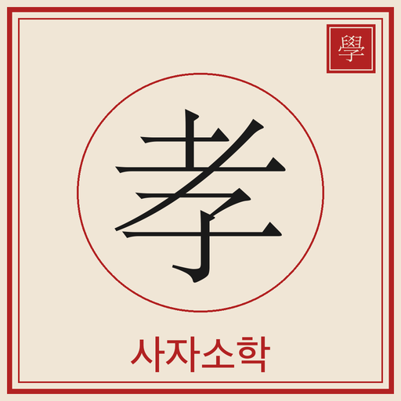

사자소학 배우기Learn Sajasohak
조선 서당의 첫 책 — 넉 자 가락에 담긴 사람의 도리를 67과로 The first book of the Korean seodang — the way of being human, in four-character verse across 67 lessons

주요 기능Features
학당 — 서당식 사자소학 공부Hakdang — Seodang-style Sajasohak
효행·형제·부부·사제·경장·붕우·수신 일곱 편을 67과로 나누어 차례로 뗍니다. 오늘 배울 구절은 홈 화면과 잠금 화면 위젯에서도 보입니다. Seven parts — filial duty, siblings, marriage, teachers, elders, friends, and self-cultivation — across 67 lessons. Today's passage also appears on your home and lock screen widgets.
습자 · 강독 · 배강Trace, Read Aloud, Recite
필순 따라쓰기로 익히고, 서산을 놓고 소리 내어 읽고, 마지막에 외워 바치는 전통 세 걸음 학습. The traditional three steps: trace each stroke, read aloud with a tally, then recite from memory.
구절마다 여섯 겹의 풀이Six Layers per Passage
독음, 두 자씩 끊은 자구 직역, 의역, 새김에 더해 출전이 실재하는 33구절에는 효경·논어·시경 등 원전 인용까지 붙였습니다. Reading, character-pair gloss, translation, and commentary — plus, for the 33 passages with a real source, the original text from the Classic of Filial Piety, the Analects, the Book of Odes, and more.
자전 — 간격 반복 복습Jajeon — Spaced Repetition
배운 한자를 잊을 때쯤 다시 묻습니다. 두 번 이상 틀린 취약 글자만 모아 복습할 수도 있습니다. Characters resurface right before you forget them, and you can drill just the ones you keep missing.
성독 이어듣기Continuous Recitation
배운 구절의 낭독을 순서대로 이어 들으며 통학길에도 복습합니다. 화면을 꺼도 재생되고, 잠금 화면에서 조작할 수 있습니다. Listen to the passages you have learned, read aloud in order. Playback continues with the screen off and is controllable from the lock screen.
세로쓰기 족자Vertical Scroll
배운 구절을 오른쪽에서 왼쪽으로 흐르는 전통 족자로 봅니다. 배운 글자가 먹빛으로 채워지고, 이미지로 공유할 수 있습니다. See your passages as a traditional scroll flowing right to left — learned characters fill in with ink, and you can share it as an image.
필순 애니메이션과 필사 판정Stroke Order and Tracing
글자마다 획이 그려지는 순서를 보여주고, 따라 쓴 획의 모양과 방향을 함께 판정합니다. 훈음, 부수, 획수, 급수 정보 포함. Watch each character drawn stroke by stroke, then trace it — shape and direction are both checked. Readings, radicals, stroke counts, and levels included.
카메라 · 필기 검색Camera and Handwriting Search
책이나 간판의 한자를 카메라로 비추어 찾고, 모르는 글자는 손으로 그려서 찾습니다. 모두 기기 안에서 처리됩니다. Point your camera at printed hanja or draw a character by hand — all recognized on-device.
오프라인 · 로그인 없음Offline, No Sign-in
모든 콘텐츠가 앱에 들어 있어 인터넷 없이 학습할 수 있습니다. 회원 가입도 계정도 필요 없고, 진행은 iCloud로 기기 사이를 오갑니다. All content ships inside the app, so you can study offline. No sign-up, no account — and your progress follows you across devices via iCloud.
이용 안내Pricing
무료로 먼저 배워 보세요Start free
- 무료 — 학당 67과 가운데 앞 16과, 사전은 급수별 앞 4분의 1. 하단에 광고가 표시됩니다. Free — the first 16 of 67 lessons and the first quarter of each dictionary grade, with an ad at the bottom.
- 평생 이용권 — 전 과와 사전 전체가 열리고 광고가 사라집니다. 구독이 아니라 1회 결제이며 만료되지 않습니다. Lifetime unlock — every lesson and the whole dictionary, with ads removed. A one-time purchase, not a subscription, and it never expires.